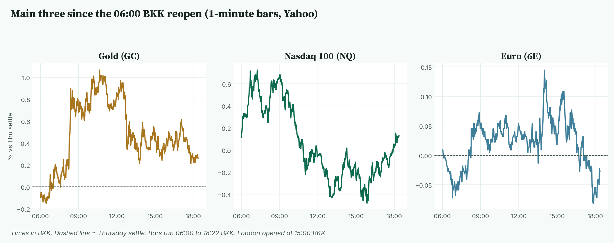
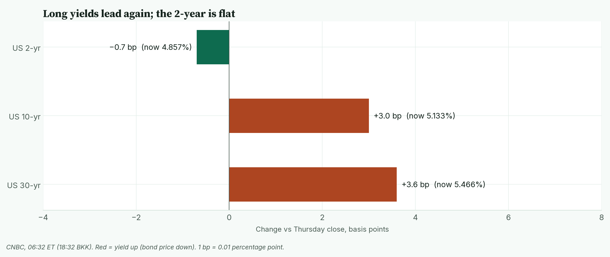
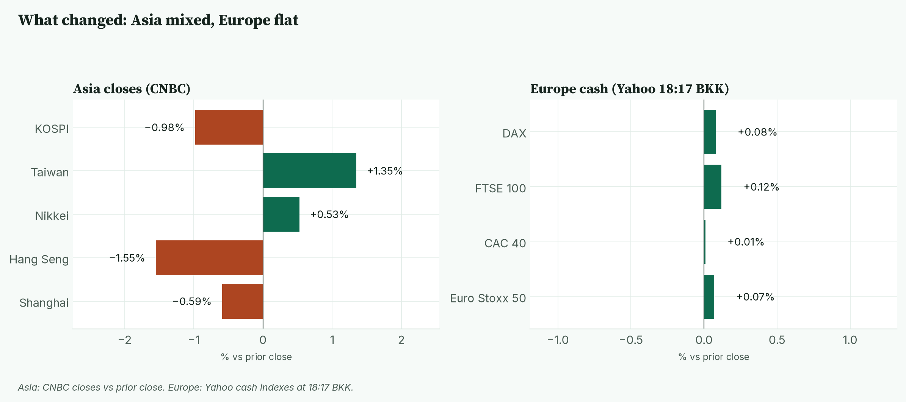
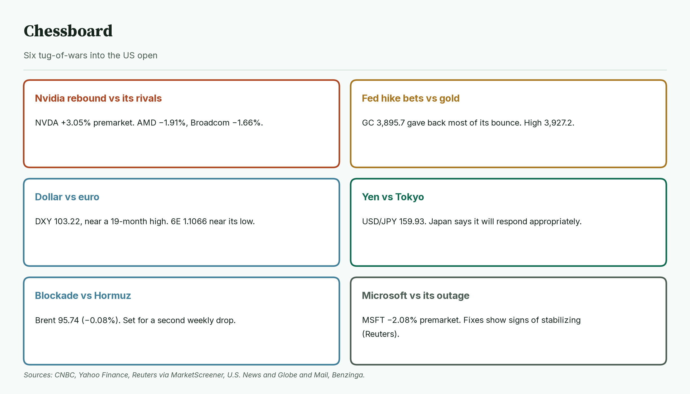
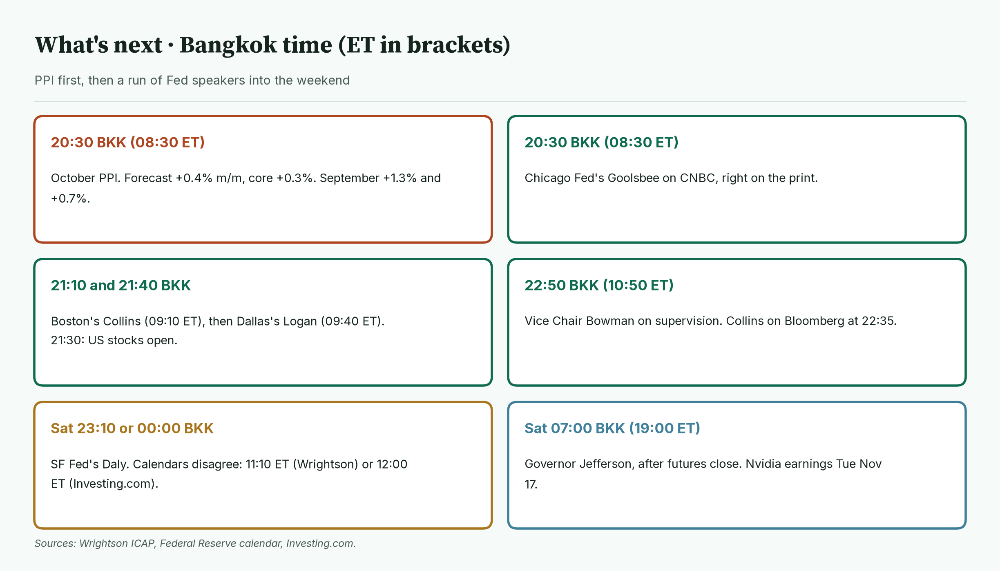
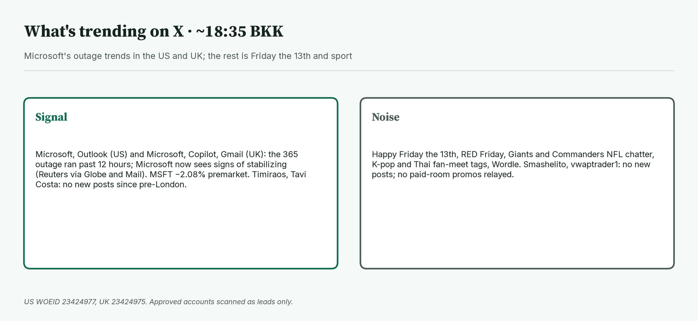

April · Market Intel, pre-NY · Fri Nov 13, 2026 · ~18:35 BKK / ~06:35 New York
Headline: Nasdaq futures climbed back from a new session low to 28,420.25 (+0.13%), helped by Nvidia rising 3.05% premarket. Gold futures gave back most of their Asia bounce at 3,895.7 (+0.27%). Euro futures slipped to 1.1066 (−0.03%) after euro-area GDP was confirmed at +0.4%. US producer prices (PPI) at 20:30 BKK decide the session.
So what: since London, the Nvidia scare has calmed but the rates squeeze has not. The 10-year yield is up again to 5.133%, and the dollar sits near a 19-month high.
 Caption: Futures at 18:22 BKK versus Thursday's settle. Nasdaq and gold are slightly up, the euro is slightly down, and Bitcoin is the big loser again.
Caption: Futures at 18:22 BKK versus Thursday's settle. Nasdaq and gold are slightly up, the euro is slightly down, and Bitcoin is the big loser again.
1) Main instruments The three main contracts since the 06:00 BKK reopen, as a % move from Thursday's settle. Gold's morning jump faded after noon. Nasdaq bottomed near 16:00 BKK and recovered. |
 Caption: The three main contracts since the 06:00 BKK reopen, as a % move from Thursday's settle. Gold's morning jump faded after noon. Nasdaq bottomed near 16:00 BKK and recovered.
(Quotes are Yahoo Finance futures at 18:22 BKK (06:22 New York), matching CNBC. Session highs and lows use Yahoo 1-minute bars from the 06:00 BKK CME reopen (18:00 New York Thursday).)
Caption: The three main contracts since the 06:00 BKK reopen, as a % move from Thursday's settle. Gold's morning jump faded after noon. Nasdaq bottomed near 16:00 BKK and recovered.
(Quotes are Yahoo Finance futures at 18:22 BKK (06:22 New York), matching CNBC. Session highs and lows use Yahoo 1-minute bars from the 06:00 BKK CME reopen (18:00 New York Thursday).)
- Gold futures (GC, Dec): 3,895.7, +0.27%, at 18:22 BKK. Driver: higher yields and a firm dollar capped the rebound. It was 3,917.7 at the pre-London brief. Thursday's settle was 3,885.3. Today's range is 3,879.1 (06:27 BKK) to 3,927.2 (10:38 BKK).
- Nasdaq 100 futures (NQ, Dec): 28,420.25, +0.13%, at 18:22 BKK. Driver: Nvidia's premarket bounce. Thursday's settle was 28,384.50. Today's range is 28,243.25 (15:58 BKK) to 28,607.75 (06:43 BKK). It broke the pre-London low of 28,314.00, then recovered.
- Euro futures (6E, Dec): 1.1066, −0.03%, at 18:22 BKK. Driver: a firm dollar, with no surprise in euro-area GDP. Thursday's settle was 1.1069. Today's range is 1.10595 (17:51 BKK) to 1.1086 (14:01 BKK).
- Takeaway: Nasdaq repaired its morning damage, gold lost its lift, and the euro is drifting lower.
Context. The dollar index (DXY, the dollar against six major currencies) is 103.22, +0.05% (CNBC, 18:32 BKK). The 10-year US yield (what the US government pays to borrow for 10 years) is 5.133%, up 3.0 basis points (CNBC, 18:32 BKK; a basis point is 0.01 percentage point). The VIX (the "fear gauge" built from S&P 500 option prices) is 18.37, −1.76% (CNBC, 18:32 BKK, an indicative pre-open print). US oil (CL, December) is 88.20, −0.61% (Yahoo, 18:22 BKK). S&P 500 futures (ES) are 7,629.50, +0.19% (Yahoo, 18:22 BKK). Bitcoin is $69,150, −3.18% versus CNBC's previous close (CNBC/Coin Metrics, 18:32 BKK).
2) Premarket earnings and movers
- Nvidia +3.05% at 171.26 (Yahoo, 18:32 BKK). It still lost about 11% this week through Thursday and is on course for its longest run of weekly losses since October 2012 (Reuters via U.S. News).
- Its rivals gave some back. AMD −1.91%, Broadcom −1.66% (Yahoo, 18:31 to 18:32 BKK).
- Cisco −2.95% despite beating estimates with adjusted EPS (earnings per share) of $1.40 on $18.52 billion revenue (Benzinga). Its after-hours gain has reversed.
- Applied Materials +0.51% after adjusted EPS of $4.16 on $10.41 billion revenue (Benzinga).
- Cerebras +17.15% after raising its 2026 sales outlook to $940–960 million (Investing.com). Q3 revenue was $210.8 million (Benzinga).
- Nu Holdings +3.97%. Microsoft −2.08% as its 365 outage ran past 12 hours (Yahoo prices; Reuters).
- Takeaway: money is drifting back into Nvidia, and Microsoft is the new soft spot.
3) Rates, FX and oil The 10-year and 30-year rose again into New York. The 2-year, which tracks Fed expectations, barely moved. |
 Caption: The 10-year and 30-year rose again into New York. The 2-year, which tracks Fed expectations, barely moved.
Caption: The 10-year and 30-year rose again into New York. The 2-year, which tracks Fed expectations, barely moved.
- CNBC, 18:32 BKK: 2-year 4.857% (−0.7 bp), 10-year 5.133% (+3.0 bp), 30-year 5.466% (+3.6 bp).
- The dollar is set for its best week in two months. It is near a 19-month high on bets of a bigger Fed hike (Reuters via MarketScreener).
- Fed odds. CME FedWatch shows a December hike fully priced, per Benzinga early Friday. I did not read FedWatch directly this run, so treat that as secondhand.
- Yen. USD/JPY is 159.93 (CNBC, 18:32 BKK). Finance Minister Katayama says Japan will "respond appropriately." Japan spent 15.4 trillion yen defending the yen when it hit 163.99 in late July (Reuters via MarketScreener).
- Oil. Brent (January) is 95.74, −0.08% and WTI 88.20, −0.61%. Brent has traded 95.07 to 96.78 since 06:15 BKK, its first bar today (Yahoo). Both are set for a second weekly drop as the US keeps its blockade of Iran (Reuters via CNBC).
- Takeaway: long-term yields keep rising even when the 2-year rests. That still weighs on gold and tech.
4) Why it matters Asia closed mixed and Europe is flat. Nobody is chasing the Nvidia story further. |
 Caption: Asia closed mixed and Europe is flat. Nobody is chasing the Nvidia story further.
Caption: Asia closed mixed and Europe is flat. Nobody is chasing the Nvidia story further.
- Euro-area Q3 GDP was confirmed at +0.4% on the quarter and +1.3% on the year, exactly as forecast (Eurostat). Q2 was revised up to +0.6% (Reuters via Boursorama).
- The big economies are weak. France −0.1%, Italy 0.0%, Germany +0.2% on the quarter. Ireland's +5.5% flatters the total (Eurostat).
- Asia closed mixed: Hang Seng −1.55%, KOSPI −0.98%, Taiwan +1.35%, Nikkei +0.53% (CNBC).
- Europe is flat: FTSE +0.12%, DAX +0.08% (Yahoo, 18:17 BKK).
- Mentor: when growth news matches forecasts, currencies trade on interest-rate gaps instead. Right now the US pays more and is expected to hike, so the dollar wins by default.
- Takeaway: no new shock overnight, so PPI and the Fed speakers set the tone.
5) Chessboard Six tug-of-wars into the US open. PPI and Fed speakers move the main three fastest. |
 Caption: Six tug-of-wars into the US open. PPI and Fed speakers move the main three fastest.
Caption: Six tug-of-wars into the US open. PPI and Fed speakers move the main three fastest.
- Nvidia rebound vs its rivals. NVDA +3.05%, AMD −1.91%. Earnings land Tue Nov 17.
- Fed hike bets vs gold. GC 3,895.7, off its 3,927.2 high.
- Dollar vs euro. DXY 103.22. 6E 1.1066, near its 1.10595 low.
- Yen vs Tokyo. USD/JPY 159.93, just under 160.
- Blockade vs Hormuz. Brent 95.74. Iran's military says four tankers were hit in the Strait of Hormuz; Reuters could not verify it (via CNBC).
- Microsoft vs its outage. MSFT −2.08%. Microsoft now sees signs of stabilizing and says there is no sign of malicious activity (Reuters via The Globe and Mail).
- Takeaway: the board still leans toward a stronger dollar, with Nvidia as the one bright square.
6) US data calendar (BKK times, ET in brackets) PPI at 20:30 BKK, then six Fed speakers from the open into the weekend. |
 Caption: PPI at 20:30 BKK, then six Fed speakers from the open into the weekend.
Caption: PPI at 20:30 BKK, then six Fed speakers from the open into the weekend.
- 20:30 (8:30 AM ET): October PPI. Forecast +0.4% month on month, core +0.3%. September was +1.3% and +0.7% (Investing.com). PPI tracks prices businesses get paid, and parts of it feed the Fed's preferred inflation gauge.
- 20:30 (8:30 AM ET): Chicago's Goolsbee on CNBC (Wrightson ICAP).
- 21:10 (9:10 AM ET): Boston's Collins. 21:30: US stocks open. 21:40 (9:40 AM ET): Dallas's Logan (Wrightson ICAP).
- 22:35 (10:35 AM ET): Collins on Bloomberg. 22:50 (10:50 AM ET): Vice Chair Bowman on supervision (Wrightson ICAP, Federal Reserve).
- Sat 23:10 or 00:00 BKK: San Francisco's Daly. Calendars disagree, 11:10 AM ET (Wrightson ICAP) or 12:00 PM ET (Investing.com).
- Sat 07:00 (7:00 PM ET): Governor Jefferson, after futures close.
- Takeaway: a hot PPI pushes yields up and hurts gold and Nasdaq. A soft one gives both relief.
7) Scenarios and levels
- Hot PPI (above +0.4%). Yields rise, the dollar firms. Watch GC 3,879.1, NQ 28,243.25 and 6E 1.10595 for breaks lower.
- In line. Ranges likely hold. GC 3,879.1 to 3,927.2, NQ 28,243.25 to 28,607.75, 6E 1.10595 to 1.1086.
- Soft PPI (below +0.4%). Yields ease. Gold could retest 3,927.2, Nasdaq 28,607.75, and the euro 1.1086.
- These are possible paths, not forecasts.
8) Undercovered
- Nvidia's deals face new questions. Investors say its financing arrangements with other AI companies could get more scrutiny under new leadership (Reuters via U.S. News).
- US home sales hit a 15-year low. October existing home sales fell 5.5% to 3.75 million, the lowest since 2010 (Saxo).
- Aluminum is getting scarce. Both London and Shanghai markets show spot metal priced above futures as stockpiles fall (Saxo).
- The Microsoft outage hit AI firms. OpenAI and Anthropic reported issues with Microsoft connectors (Reuters via Nikkei Asia).
9) What's trending on X (~18:35 BKK) Microsoft's outage trends on both sides of the Atlantic. The rest is Friday the 13th, football and fan events. |
 Caption: Microsoft's outage trends on both sides of the Atlantic. The rest is Friday the 13th, football and fan events.
Caption: Microsoft's outage trends on both sides of the Atlantic. The rest is Friday the 13th, football and fan events.
- US: Microsoft, Outlook, Happy Friday the 13th, Giants.
- UK: Microsoft, Copilot, Gmail, Bill Gates.
- Signal: the Microsoft trend matches a real, sourced outage and a premarket drop in the stock.
- Approved accounts: Nick Timiraos, Tavi Costa, Smashelito and vwaptrader1 had no new posts since the pre-London scan. No JJ / vwaptrader1 paid-room promos relayed.
- Noise: Friday the 13th posts, NFL chatter, K-pop and fan-meet tags.
Bottom line: Nvidia calmed down, the bond market did not. For Jim: Nasdaq at 28,420.25 sits mid-range, 28,243.25 to 28,607.75. Gold at 3,895.7 sits near the bottom of 3,879.1 to 3,927.2. The euro at 1.1066 sits near its 1.10595 low. Interpretive note: PPI at 20:30 BKK is the hinge for all three. 🔮 Interpretive, not data: Friday the 13th as a 4, the builder's number, fits a day where the market rebuilds after a shock. Symbol, not signal.
Confidence: Futures levels: high (Yahoo, matching CNBC). Session ranges: Yahoo 1-minute bars from 06:00 BKK; Brent from its first bar at 06:15 BKK. Yields, DXY, VIX, yen, Bitcoin, Asia: CNBC, time-stamped. Premarket prices: Yahoo, 18:25 to 18:32 BKK. Earnings figures: Benzinga. GDP: Eurostat. Dollar, yen, oil, Nvidia, Microsoft: Reuters via MarketScreener, CNBC, U.S. News, Nikkei Asia and The Globe and Mail. Calendar: Wrightson ICAP, Federal Reserve, Investing.com. Housing and aluminum: Saxo. X posts: leads only. Removed: a direct FedWatch read (secondhand only) and Daly's exact time (sources disagree).
Charts: /workspace/april-charts/2026-11-13/pre-ny-{scoreboard,main3,rates,asia,chess,leading,xsplit}.png |